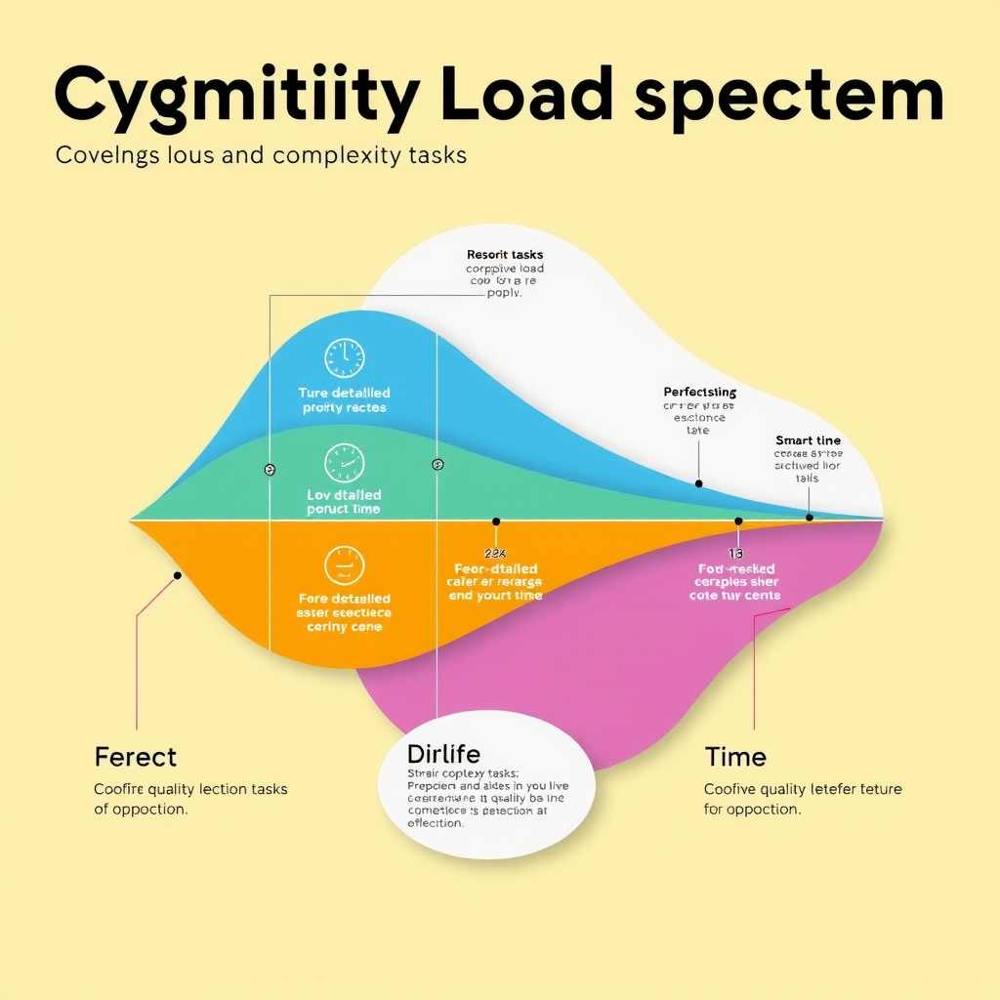
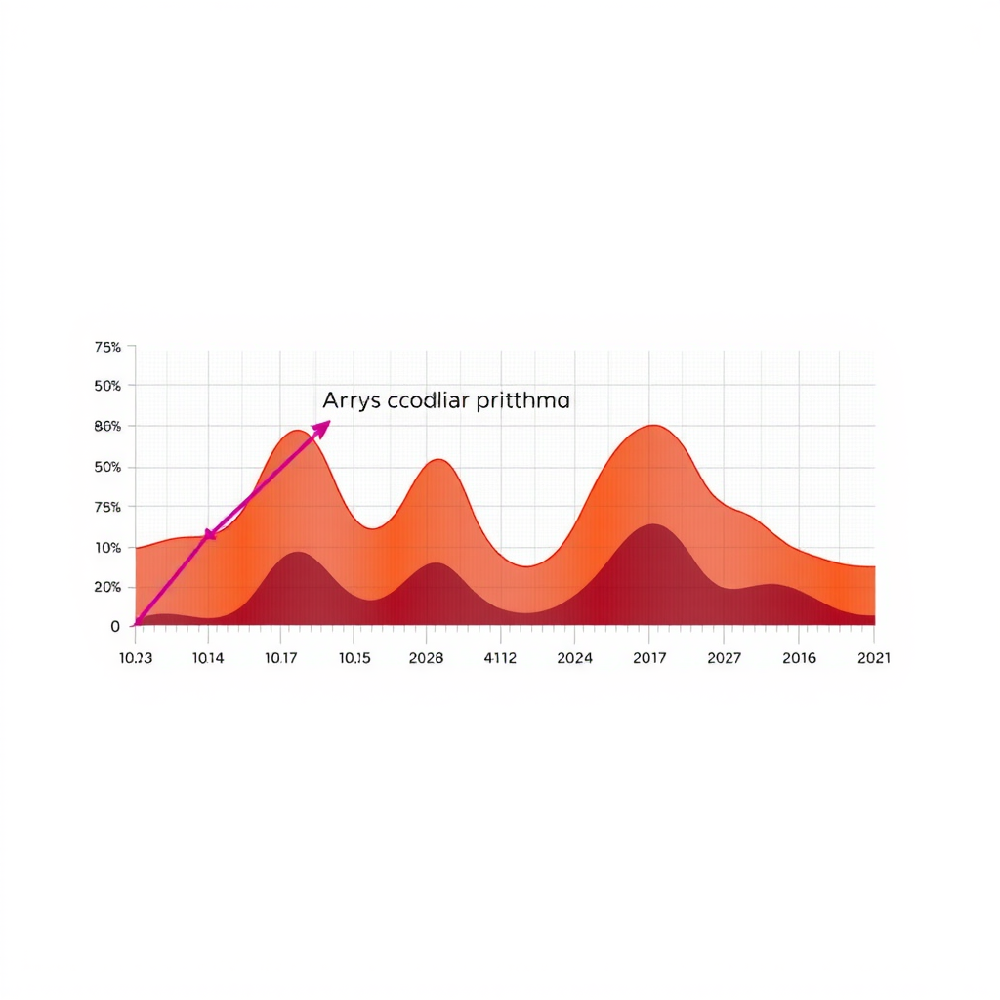
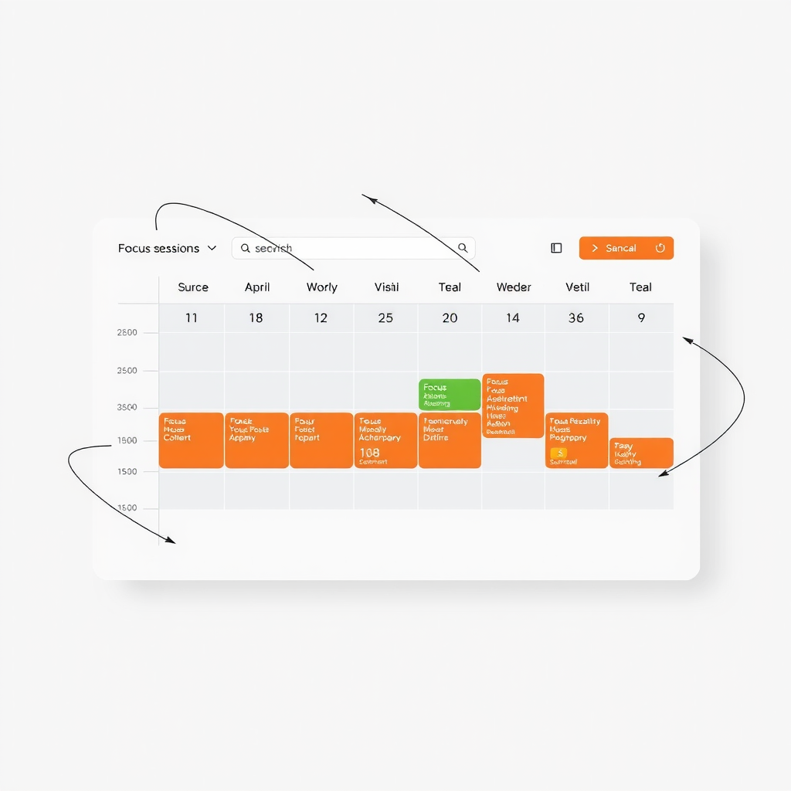

Beyond the 25-Minute Rule: Adaptive Focus Sessions for Peak Cognitive Performance
Move beyond traditional 25-minute intervals with this modern take on the classic productivity method. Learn how to customize focus sessions based on task complexity, circadian rhythms, and cognitive load to achieve optimal performance throughout your day.
The Evolution of Time-Based Productivity
The Pomodoro Technique revolutionized how we think about focused work when Francesco Cirillo introduced it in the late 1980s. The premise was elegantly simple: work in 25-minute intervals, take short breaks, and repeat. This structured approach helped millions overcome procrastination and maintain consistent productivity. However, as our understanding of cognitive design and human efficiency has evolved, we've discovered that one-size-fits-all timing may not optimize for the speed of thought that modern knowledge work demands.
Recent neuroscience research reveals that our attention spans and cognitive capacity fluctuate throughout the day based on circadian rhythms, task complexity, and mental state. A 25-minute session might be perfect for routine email processing but woefully inadequate for deep architectural thinking or creative problem-solving. The key to superhuman efficiency lies not in rigid adherence to arbitrary time blocks, but in developing an intelligent interaction with your own cognitive patterns.
This adaptive approach to focus architecture represents a fundamental shift in how we design our work systems. Rather than forcing our minds to conform to external timers, we create flow systems that respond to our natural rhythms while maintaining the structure needed to prevent distraction and cognitive drift. The result is a neuro-interface between intention and execution that feels effortless yet produces extraordinary results.
"The most productive people don't fight their cognitive rhythms—they design their work around them. Adaptive focus sessions transform time management from a discipline into an art form."
Understanding Your Cognitive Load Spectrum
Before you can optimize your focus sessions, you need to understand the cognitive load spectrum of your work. Not all tasks are created equal in terms of mental demand, and recognizing these differences is crucial for mental optimization. At one end of the spectrum, we have low-complexity tasks: responding to routine emails, data entry, scheduling, and administrative work. These activities require minimal cognitive resources and can often be completed in shorter bursts of 15-20 minutes.
Medium-complexity tasks occupy the middle ground: writing standard reports, conducting research, attending meetings, and collaborative work. These activities benefit from the traditional 25-30 minute focus sessions, as they require sustained attention without demanding the deepest levels of cognitive engagement. This is where the classic Pomodoro approach still shines, providing enough time to make meaningful progress while preventing mental fatigue.
High-complexity tasks represent the pinnacle of cognitive demand: strategic planning, creative problem-solving, complex coding, architectural design, and deep analytical work. These activities require what researchers call "flow states"—periods of intense focus where time seems to disappear and productivity soars. For these tasks, 25 minutes is often just enough time to load the problem into your working memory. Optimal sessions for high-complexity work typically range from 45 to 90 minutes, aligning with our natural ultradian rhythms.
The key insight from design intelligence research is that attempting to force high-complexity work into short intervals creates constant context-switching overhead. Each time you stop and restart, you lose precious minutes rebuilding your mental model of the problem. By extending focus sessions for demanding work, you amortize this startup cost across a longer productive period, dramatically improving your effective output.
Mapping Your Circadian Cognitive Peaks
Your brain doesn't operate at constant capacity throughout the day. Understanding your personal circadian rhythms is essential for scheduling the right type of focus session at the right time. Most people experience their peak cognitive performance in two distinct windows: a morning peak typically occurring 2-4 hours after waking, and an afternoon peak usually between 2-4 PM. However, individual variation is significant, and discovering your unique pattern is crucial for superhuman efficiency.
To map your cognitive peaks, track your energy and focus levels every two hours for two weeks. Rate yourself on a scale of 1-10 for mental clarity, creative thinking, and sustained attention. Patterns will emerge quickly. You might discover you're a morning person who can tackle complex architectural problems before 10 AM, or an evening thinker who hits peak flow after 7 PM. This self-knowledge becomes the foundation of your personalized focus architecture.
Once you've identified your peaks, protect them fiercely. Schedule your highest-complexity work during these windows, using extended focus sessions of 60-90 minutes. Reserve your cognitive valleys—typically mid-morning and mid-afternoon—for lower-complexity tasks that can be completed in shorter 15-25 minute bursts. This strategic alignment between task complexity and cognitive capacity creates a multiplier effect on your productivity.
Digital mindfulness plays a crucial role here. During your peak periods, eliminate all notifications, close unnecessary applications, and create an environment that supports deep work. Your brain is primed for complex thinking—don't waste this precious resource on shallow tasks that could be handled during lower-energy periods. This intentional scheduling transforms your workday from a series of random tasks into a carefully orchestrated performance.
The Adaptive Session Framework
Now that you understand cognitive load and circadian rhythms, let's build your adaptive session framework. This system uses three session types, each optimized for different work modes and energy levels. The Sprint Session (15-20 minutes) is perfect for low-complexity tasks during cognitive valleys. Use these for email processing, quick administrative tasks, and routine communications. The rapid pace prevents boredom and maintains momentum through less engaging work.
Three Session Types for Optimal Performance
Sprint Session (15-20 minutes)
Low-complexity tasks, administrative work, quick communications. Best during cognitive valleys.
Standard Session (25-35 minutes)
Medium-complexity tasks, collaborative work, routine analysis. Effective throughout the day.
Deep Session (60-90 minutes)
High-complexity tasks, creative work, strategic thinking. Schedule during cognitive peaks only.
The Standard Session (25-35 minutes) handles medium-complexity work and remains useful throughout the day. This is your workhorse session type, suitable for most routine professional tasks. The slight extension beyond the traditional 25 minutes accounts for the reality that many tasks naturally require 30-35 minutes to reach a satisfying completion point. Fighting to finish in exactly 25 minutes often creates unnecessary stress and incomplete work.
The Deep Session (60-90 minutes) is reserved for your most important, complex work during cognitive peaks. These extended periods allow you to achieve genuine flow states where breakthrough thinking occurs. Start with 60-minute sessions and gradually extend to 90 minutes as your focus stamina improves. The key is maintaining single-task focus throughout—no email checks, no phone glances, no "quick" interruptions. This level of concentration is where superhuman productivity emerges.
Strategic Break Design for Cognitive Recovery
The quality of your breaks determines the sustainability of your focus sessions. Traditional Pomodoro prescribes 5-minute breaks between sessions and 15-30 minute breaks after four sessions. While this provides a useful baseline, adaptive break design requires more nuance. After Sprint Sessions, a 3-5 minute break is sufficient—stand up, stretch, look away from screens. These micro-breaks prevent physical strain without disrupting your momentum.
Standard Sessions benefit from 5-10 minute breaks. Use this time for genuine mental disengagement: walk around, get water, practice brief mindfulness exercises, or engage in light social interaction. Avoid the temptation to check email or social media—these activities don't provide cognitive rest and often trigger new mental threads that interfere with your next session. The goal is neural reset, not task switching.
Deep Sessions require substantial recovery periods of 15-20 minutes. After 60-90 minutes of intense cognitive work, your brain needs time to consolidate learning and restore mental resources. Take a walk outside if possible—research shows that nature exposure accelerates cognitive recovery. Alternatively, practice meditation, do light exercise, or engage in a completely different activity like sketching or playing a musical instrument. The key is active recovery, not passive screen time.
Consider implementing a "cognitive cooldown" at the end of each Deep Session. Spend the final 5 minutes documenting your progress, noting key insights, and setting up your next session. This practice serves dual purposes: it provides closure for your current work while priming your subconscious to continue processing the problem during your break. Many breakthrough insights occur during these transition periods when your mind shifts from focused to diffuse thinking mode.
Implementing Your Personalized Focus System
Building your adaptive focus system requires intentional experimentation and refinement. Start by auditing your typical workday: categorize your tasks by complexity, note your current energy patterns, and identify where you're currently misaligning task difficulty with cognitive capacity. You'll likely discover you've been attempting complex work during low-energy periods or wasting peak hours on trivial tasks—both common efficiency killers.
Design your ideal week by blocking out your cognitive peaks for Deep Sessions on your most important work. Schedule Standard Sessions for medium-complexity tasks during your moderate-energy periods. Fill cognitive valleys with Sprint Sessions for administrative work and routine communications. This strategic time blocking creates a rhythm that works with your natural patterns rather than against them. Remember, this is a template, not a prison—maintain flexibility for urgent matters while protecting your core focus architecture.
Track your results for at least two weeks before making major adjustments. Note which session types feel most productive, when you achieve flow most easily, and where you encounter resistance. This data reveals your true cognitive patterns, which may differ from your assumptions. Some people discover they're more productive with four 60-minute Deep Sessions per week than daily 90-minute sessions. Others find that alternating between session types throughout the day maintains better energy than batching similar work.
Refine your system based on evidence, not theory. If 45-minute sessions feel more natural than 60-minute ones, adjust accordingly. If you need 7-minute breaks instead of 5, take them. The goal isn't adherence to a perfect system—it's creating an intelligent interaction between your work demands and cognitive capacity. Your personalized focus architecture should feel like a supportive structure, not a restrictive cage. When properly calibrated, it enables the speed of thought that characterizes truly superhuman efficiency.
Advanced Techniques for Flow Optimization
Once you've established your basic adaptive system, several advanced techniques can further enhance your focus architecture. Session stacking involves chaining multiple Deep Sessions with strategic breaks to tackle complex projects requiring sustained attention. For example, a 90-minute Deep Session, followed by a 20-minute break, then another 60-minute Deep Session can produce extraordinary results on challenging problems. However, limit this to once or twice per week to prevent cognitive burnout.
Task batching within sessions maximizes efficiency by grouping similar activities. Rather than scattering email responses throughout the day, batch them into a single Sprint Session. Consolidate all your meetings into specific afternoon blocks, preserving morning cognitive peaks for deep work. This reduces context-switching overhead and creates longer uninterrupted periods for focused work. The mental clarity that emerges from this approach often surprises people—suddenly, work that seemed overwhelming becomes manageable.
Environmental design plays a crucial role in session effectiveness. Create distinct physical or digital environments for different session types. Use specific music, lighting, or locations to signal your brain which mode you're entering. Some people use standing desks for Sprint Sessions, seated positions for Standard Sessions, and comfortable chairs for Deep Sessions. Others vary their digital workspace, using different browser profiles or desktop layouts for different work modes. These environmental cues accelerate your transition into focused states.
Pre-session rituals prepare your mind for focused work. Develop a consistent 2-3 minute routine before each session: review your objective, eliminate distractions, take three deep breaths, and set your timer. This ritual becomes a psychological trigger that signals the start of focused work. Similarly, post-session rituals—documenting progress, noting insights, preparing for the next session—provide closure and prevent mental residue from contaminating your breaks. These small practices compound into significant performance improvements over time.
Key Takeaways for Adaptive Focus
- → Match session length to task complexity: 15-20 minutes for simple tasks, 25-35 for medium complexity, 60-90 for deep work
- → Schedule high-complexity work during your cognitive peaks, typically 2-4 hours after waking and mid-afternoon
- → Design breaks proportional to session intensity: 3-5 minutes after sprints, 5-10 after standard sessions, 15-20 after deep work
- → Track your performance for two weeks before adjusting your system—evidence beats assumptions
- → Use environmental cues and rituals to accelerate transitions into focused states
The Future of Cognitive Performance
As we continue to understand the neuroscience of attention and productivity, focus systems will become increasingly personalized and adaptive. Emerging technologies promise real-time cognitive load monitoring, AI-powered session recommendations, and biometric feedback that adjusts your schedule based on actual mental state rather than predetermined patterns. However, the fundamental principles remain constant: align task complexity with cognitive capacity, respect your natural rhythms, and design systems that support rather than constrain your thinking.
The shift from rigid time blocks to adaptive focus sessions represents a broader evolution in how we think about productivity. Rather than forcing ourselves into artificial constraints, we're learning to work with our cognitive architecture, creating flow systems that feel natural and sustainable. This approach doesn't just increase output—it transforms the quality of our work and our experience of working. When you're operating in harmony with your mental rhythms, work becomes energizing rather than depleting.
The path to superhuman efficiency isn't about working harder or longer—it's about working smarter by understanding and optimizing your unique cognitive patterns. By moving beyond the 25-minute rule and embracing adaptive focus sessions, you create a personalized productivity system that scales with your ambitions while preserving your mental health. This is the future of knowledge work: intelligent, adaptive, and fundamentally human.